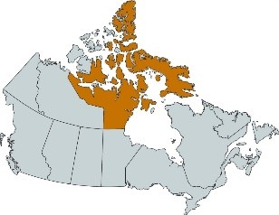

Legal Framework
Disclaimer
Please note that the information presented here has been summarized. In case of discrepancy between the content and relevant policies and regulations, the policies and regulations will take precedence.
Legislation, Regulations and Policies
In addition to the objectives and principles of procurement, contracting activities are also governed by numerous pieces of legislation, regulations, policies, directives, land claims agreements, and trade agreements. Let’s look at some of the key ones and how they impact procurement activities.
Financial Administration Act
The Financial Administration Act provides the legal framework for the collection and expenditure of public funds.
Section 32 states that before you sign a certification, you must ensure that the funds are available to pay a contractor in the fiscal year in which the work will occur, and you must keep financial records of this transaction.
Section 33 states that finance officers must ensure that both section 32 certification and section 34 certification have been duly granted and applied before they can authorize payment to a contractor.
Section 34 states that you must verify that the Crown has received what it was supposed to receive under a contract and that the price is in accordance with the contract; or that a payment in advance of getting a final deliverable is in accordance with the terms of a contract, before you certify section 34.
Section 41 states that the Governor in Council may make regulations with respect to the conditions under which contracts may be entered into, and that the value of contracts cannot be more than allowed, unless approved by the Treasury Board or Governor in Council.
Section 80 provides that anyone who takes the following actions is guilty of an indictable offence and liable on conviction to a fine of up to $5,000 and imprisonment for a term of up to five years:
- Receives compensation or rewards for the performance of any official duty, except as by law prescribed
- Conspires or creates opportunity for any person to defraud Her Majesty
- Permits any contravention of the law by any other person
- Willfully makes or signs a false entry in any book
- Fails to report, in writing, knowledge or information of the contravention of this Act or any acts of fraud to a superior officer
- Demands, accepts or attempts to collect as payment or gift, money or other items of value, for the compromise of any charge or complaint for any contravention of the law
For more information, consult the Financial Administration Act.
Criminal Code of Canada
The Criminal Code of Canada states that any official or employee who takes any of the following actions is guilty of an indictable offence and liable to imprisonment for a term of up to five years or an offence punishable on summary conviction:
- Demands or accepts a benefit of any kind as consideration for cooperation, influence or an act or omission in connection with the transaction of business with the government
- Accepts a commission, reward, advantage or benefit from someone who has dealings with the government, unless they have the consent in writing of the head of the branch of government that employs them or of which they are an official
- Any official who, in connection with the duties of their office, commits fraud or a breach of trust
For more information, consult section 121 and section 122 of the Criminal Code of Canada.
Department of Public Works and Government Services Act
The Department of Public Works and Government Services Act grants the mandate to provide goods and materiel and other services to organizations to support and assist them in meeting their obligations. This includes planning for and the acquisition of supplies and services, and the provision of office accommodation and other facilities.
The Act gives the Minister of Public Services and Procurement Canada (PSPC) the exclusive authority for the acquisition of goods. All ministers have the inherent power to contract; however, the authority given to the minister in section 9 of this Act supplants the authority of each organization to contract for goods. This authority may be restored to the extent determined by the minister through a delegation, in accordance with section 8 of this Act.
Typically, this authority is delegated for goods up to $100,000 for sole-source contracts and $750,000 for competitive contracts or as per a limit set out in a PSPC standing offer or for goods bought during an emergency.
For more information, consult the Department of Public Works and Government Services Act.
Government Contracts Regulations
The Government Contracts Regulations (GCRs) are divided into three parts. You must know the contents of each of these three parts as they will impact the procurement decisions you make, including whether to open a competitive process or enter into a sole-source contract.
| Part 1 |
| Sets out the conditions for entering into a contract. It outlines the requirement for soliciting bids and exceptions, advanced payments and progress payments. |
| Part 2 |
| Sets out the conditions for bid and contract security, such as bid bond, payment bond, performance bond or non-negotiable security deposit. |
| Part 3 |
| Sets out the terms deemed to be in every construction, goods or service contract that provides for payment by the Crown. |
The GCRs will apply to the majority of goods, services and construction contracts that are entered into, except in the following examples:
- Contracts entered into by the National Film Board
- Contracts for the construction of buildings entered into under the Veterans’ Land Act
- Contracts entered into under the Indian Act that involve Indian monies as defined in that Act
- Contracts for the performance of legal services
- Contracts for the fit-up of an office or residential accommodation pursuant to the Federal Real Property and Federal Immovables Act or the Federal Real Property and Federal Immovables Act Regulations
- Arrangements under an Interchange Canada Agreement
- Contracts for operational reasons, to fulfil an interim requirement for defence supplies or services or to ensure logistical capabilities on an interim basis
Furthermore, the Government Contracts Regulations require that all suppliers be given an opportunity to bid for contracts unless the requirement meets one of the exceptions, and that all contracts include terms that are declarations made by a contractor regarding corruption, collusion, lobbying and public disclosure.
For more information, consult the Government Contracts Regulations.
Policy on the Planning and Management of Investments
The Policy on the Planning and Management of Investments sets the direction for the planning and management of assets and acquired services to ensure that these activities provide value for money and demonstrate sound stewardship in program delivery to Canadians. It explains the requirements for meeting these objectives and ensuring that:
- assets and services are well managed
- decisions are based on an assessment of full-cycle costs
- governance and oversight are effective
- integrated and collaborative practices are in place
- employees have the knowledge, experience and skills to carry out their responsibilities in planning and managing assets and services
For more information, consult the Policy on the Planning and Management of Investments and the Directive on the Management of Projects and Programmes.
Contracting Policy
The Contracting Policy explains the requirements for meeting the contracting objective, including that:
- contracts or contractual arrangements that exceed departmental contracting authority limits as set out in Appendix C of the Policy require Treasury Board approval before they can be signed
- limits are lower for non-competitive contracts directed to a particular bidder
- contract approval must be provided by the department's responsible minister prior to entering into a non-competitive service contract with a former public servant
- the use of Public Services and Procurement Canada standing offers is mandatory for goods and services that organizations require on a regular basis (listed in Schedule 4 of Appendix C)
- organizations disclose basic information about contracts exceeding a value of $10,000
For more information, consult the Contracting Policy.
Policy on Management of Materiel
The objective of the Policy on Management of Materiel is to ensure that materiel is managed by departments in a sustainable and financially responsible manner that supports the cost-effective and efficient delivery of government programs. It outlines the requirements for ensuring that materiel is managed in the interest of:
- due diligence
- maximum long-term economic advantage for the Crown
- protection and preservation of Canadian heritage and the environment
- fairness and transparency
For more information, consult the Policy on Management of Materiel.
Policy on Management of Real Property
The objective of the Policy on Management of Real Property is to ensure that real property is managed in a sustainable and financially responsible manner throughout its life cycle, and to support the cost-effective and efficient delivery of government programs. It outlines the requirements for ensuring that real property is managed in the interest of:
- maximizing the long-term economic advantage for the Crown and the best value for Canadians
- allowing barrier-free access and use of federal real property and services that ensure inclusiveness and non-discrimination
- cultural and environmental stewardship that contributes to the preservation and protection of our heritage and the environment
- fair, open and transparent transactions that ensure equitable treatment
For more information consult the Policy on Management of Real Property.
Policy on Green Procurement
The Policy on Green Procurement seeks to:
- reduce the environmental impacts of government operations
- promote environmental stewardship
- adapt to climate change by integrating environmental considerations in the procurement process
The Policy also targets specific environmental outcomes where procurement can be used effectively to mitigate the impact of or adaptation to climate change and support the protection of biodiversity, natural areas, air, soil and water.
For more information, consult the Policy on Green Procurement.
Trade Agreements
Many trade agreements have a role in developing Canada’s trade network. The two most important are:
- World Trade Organization – Agreement on Government Procurement (WTO – AGP)
- Canadian Free Trade Agreement (CFTA)
Depending on the nature, scope and estimated dollar value of the procurement, one or more trade agreements may apply. Applicable trade agreements could have an impact on the bid solicitation period and the bid solicitation approach. Consult a procurement specialist about contracts with an estimated value of greater than $25,000 to determine the rules that apply.
For more information, consult WTO – AGP or CFTA.
Modern Treaties/Comprehensive Land Claims Agreements
Modern treaties/Comprehensive Land Claims Agreements (CLCAs) have been negotiated to ensure the fair treatment of Indigenous interests with respect to cultural, social, political and economic rights, including rights to lands and to fish and hunt and practise their culture. Although some modern treaties/CLCAs include measures dealing with procurement, these measures are not identical in all the various agreements. However, they are all aimed at enhancing the economic opportunities of the Indigenous group benefiting from the agreement, usually through increased possibilities of competing successfully for contracts in their settlement areas or of participating in employment, training or subcontracting opportunities.
Where there is a final delivery of a good or service, including construction, to a land claim area or an area requiring access to modern treaty/CLCA land, a contracting authority must be consulted to help determine which modern treaty/CLCA obligations apply and how to satisfy them. This is because each modern treaty/CLCA has different requirements for government procurement, depending on the agreement.
For more information, consult chapter 9.35 of the Buyandsell.gc.ca Supply Manual or view the modern treaties and self-government agreements map.
Directive on Government Contracts, including Real Property Leases, in the Nunavut Settlement Area
The Directive on Government Contracts, including Real Property Leases, in the Nunavut Settlement Area establishes requirements for government contracts, including real property leases, in the Nunavut Settlement Area. This includes obligations around planning, monitoring and reporting, as well as mechanisms such as limiting bidding to Inuit firms and including Inuit and Nunavut Benefits Criteria in some situations.
A contracting authority must be consulted for advice on implementing the requirements of the Directive if the deliverables, or a portion of the deliverables, include final performance or delivery in the Nunavut Settlement Area.

For more information, consult the Directive on Government Contracts, including Real Property Leases, in the Nunavut Settlement Area.
Indigenous Business
The Procurement Strategy for Aboriginal Business (PSAB) consists of measures intended to increase the number of Indigenous firms competing for and winning federal contracts. One of the primary components of the PSAB is “set-asides,” where procurements are taken out of the normal context and reserved for Indigenous businesses. Mandatory set-asides are for procurements over $5,000 for which Indigenous populations are the primary recipients; voluntary set-asides are other procurements voluntarily set aside by organizations.
Your organization sets annual targets for contracts with Indigenous businesses that may impact your procurement. Your procurement specialist will inform you of the process for PSAB set-asides.
For more information, consult the Procurement Strategy for Aboriginal Business.
Policy on Government Security
According to the Policy on Government Security, organizations are responsible for protecting sensitive information and assets under their control. You must consult with the departmental security officer on the security requirements to impose on a contractor when the contractor will have access to or produce sensitive information or assets.
Organizations must complete the Security Requirements Checklist for contracts, standing offers or supply arrangements that contain a security requirement. The completed checklist must accompany all requisitions and related contractual documents that contain security requirements. It does not replace the necessary clauses in the contract that specify security requirements.
For more information, consult the Policy on Government Security.
Common Services Policy
The Common Services Policy ensures that organizations can acquire responsive, cost-effective support for the delivery of their programs. It provides that client-service organizations offer services to client organizations to support the timely, effective and economical delivery of programs to the public. The Policy identifies Public Services and Procurement Canada as both a provider of mandatory common services (under Appendix E) and of optional common services (under Appendix F).
For more information, consult the Common Services Policy.
Defence Production Act
Of particular interest for those procuring on behalf of the Department of National Defence, the Defence Production Act gives the Minister of Public Services and Procurement Canada the exclusive authority to buy or otherwise acquire defence supplies and construct defence projects.
For more information, consult the Defence Production Act.
Accessible Canada Act
The Accessible Canada Act benefits all persons, especially persons with disabilities, by identifying and removing barriers and preventing the creation of new barriers, in the following areas:
- Employment
- The built environment
- Information and communication technologies
- Communication, other than information and communication technologies
- Procurement of goods, services and facilities
- Design and delivery of programs and services
- Transportation
- Areas designated under regulations
The Act also requires, where appropriate, that departments include accessibility criteria when specifying requirements for goods and services and ensure that deliverables incorporate accessibility features.
For more information, consult the Accessible Canada Act.